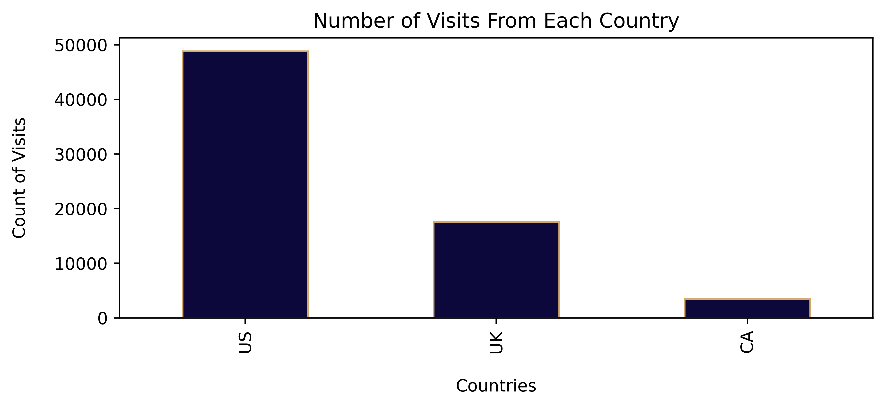
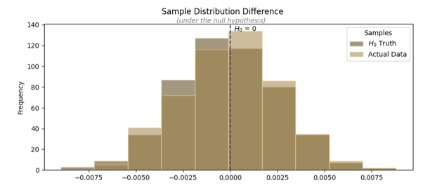
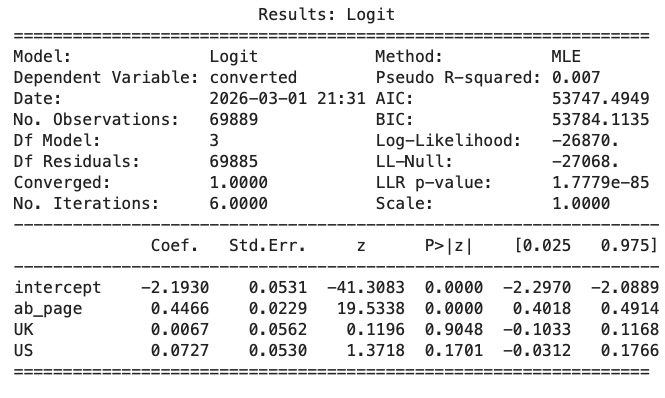

Practical Statistics
Overview
This project was the second required submission in Udacity's Statistics for Data Analysis Nanodegree, which WGU accepted as credit toward my Introduction to Data Science coursework. The analysis questions in the notebook were written by Udacity; my job was to write and run the code needed to answer each one, then interpret the result in one or two sentences of my own.
The dataset itself was an A/B test: roughly 35,000 visitors saw a new webpage design (treatment) and about 34,700 saw the existing page (control), split across the US, UK, and Canada. The assignment worked through the same underlying question two different ways, a traditional hypothesis test comparing conversion rates directly, and a logistic regression that could account for page and country at the same time. I'd guess pairing the two was intentional on Udacity's part, giving students firsthand experience producing results from two different statistical approaches and seeing whether they agreed, rather than trusting a single test in isolation.
Since this was a pass/fail requirement toward course credit rather than a project I scoped myself, my focus going in was less about the business question and more about building fluency with pandas and NumPy: reading questions I hadn't written, translating each into working analysis code, and writing a defensible statistical interpretation.
The A/B Test
The dataset had about 35,211 visitors who saw the new treatment page and 34,678 who saw the existing control page, spread across the US, UK, and Canada, with no missing values to deal with. About 13% of everyone converted regardless of which page they landed on, but that number splits once you separate the groups: control converted at 10.5%, treatment at 15.5%, so treatment came out roughly 5 percentage points ahead.
The question was whether that 5% gap was a real effect or just noise, and Udacity wanted it answered a specific way: simulate what the gap would look like 500 times if there were truly no difference between the pages, then see how often those simulated gaps were as big as, or bigger than, the one I actually observed. That share becomes the p-value, and mine landed at 0.00, way under the 0.05 cutoff, so the call was to reject the null hypothesis, treatment's higher conversion wasn't just random luck.
One thing I want to be upfront about: when I built the country dummy variables (US and UK, with CA left out as the baseline), I originally ordered the columns differently, and the evaluator flagged it as a correction, Canada needed to come first so it dropped out as the baseline the way it was supposed to. Fixing that shifted the numbers a bit, including the Logit summary table. I still don't fully know why the order mattered mechanically, but it taught me that how you encode dummy variables isn't just a formatting choice, it changes what the model ends up comparing against.
The Regression Model
Since converting is a binary outcome, yes or no, this part of the assignment called for logistic regression instead of the resampling approach from before. The assignment had me build the model in two stages: first just an intercept and the ab_page dummy (1 for treatment, 0 for control), then a second version that added US and UK dummies on top, with CA left out as the baseline.
The first model's ab_page p-value came out to 0.000, matching the conclusion from the A/B test, the page someone saw did affect whether they converted. Adding country to the model didn't change that: US came in at a p-value of 0.1701 and UK at 0.9048, both well above the 0.05 cutoff, so neither country showed a statistically significant effect on conversion.
For how I explained the coefficients, I leaned on the same style the course instructor used when walking through his own sample results, converting each coefficient into an odds ratio rather than just reporting the raw number. So instead of leaving it as a coefficient, I said the treatment page made someone 1.56 times as likely to convert as the control page, holding everything else constant. Using that same framing, someone from the US was 1.08 times as likely to convert as someone from CA, and someone from the UK was 1.01 times as likely.
Results
The chart below shows how visits broke down by country before any treatment/control split: the US made up the bulk of traffic at 48,850 visitors, UK followed with 17,551, and Canada trailed well behind at 3,488.

The next chart is the simulated null distribution from the A/B test, 500 draws of what the conversion gap would look like if treatment and control really performed the same. It's centered right around zero, which is exactly what you'd expect if there were no real effect. The observed 5% gap I actually measured sits way out past the tail of that distribution, which is the visual version of why the p-value landed at 0.00.

Last is the Logit summary table from the regression model, showing the coefficients and p-values for the intercept, ab_page, US, and UK. It's the same table the numbers in the regression section came from, ab_page significant at 0.000, US and UK both well above the 0.05 cutoff.

Conclusion
Both the simulation-based A/B test and the logistic regression pointed to the same answer: the treatment page led to a real, statistically significant lift in conversions, not just random variation. Conversion sat at 15.5% for treatment versus 10.5% for control, and neither method found country of origin to be a meaningful factor either way. Based on that, my recommendation is straightforward: implement the new treatment page.